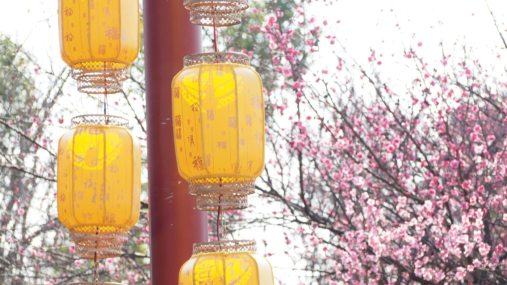
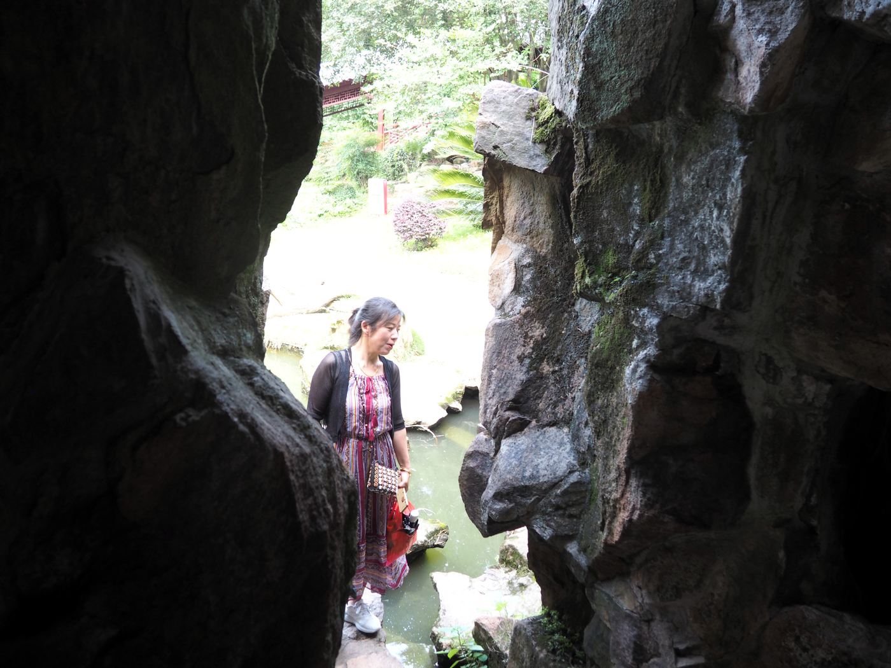

园
GARDEN — A Season in the Garden
园林是一种被安排过的自然。梅先开，绣球后至，银杏把整条走廊烧成金色。 我花了三年时间记录这种顺序——花不是同时盛开的，季节也不是。
进入系列 / VIEW SERIESFive series · 2023—2026
GARDEN — A Season in the Garden
园林是一种被安排过的自然。梅先开，绣球后至，银杏把整条走廊烧成金色。 我花了三年时间记录这种顺序——花不是同时盛开的，季节也不是。
进入系列 / VIEW SERIES
LANTERN — Everything the Sun Leaves Behind
灯是临时造出来的太阳。 庙会那几天，天黑得比往常早，人把光挂到树上，于是树也亮起来——像一场短暂的、可以被收回的白天。
进入系列 / VIEW SERIES


JOURNEY — Eight Days, Five Places
2026 年 8 月，八天，五个地方。 这一组是按地点编号而不是按时间排列的——离开之后，时间会重新排列地点。
进入系列 / VIEW SERIES